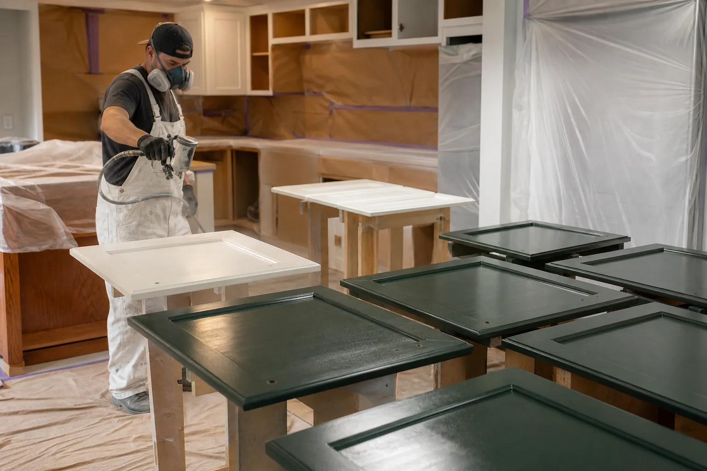
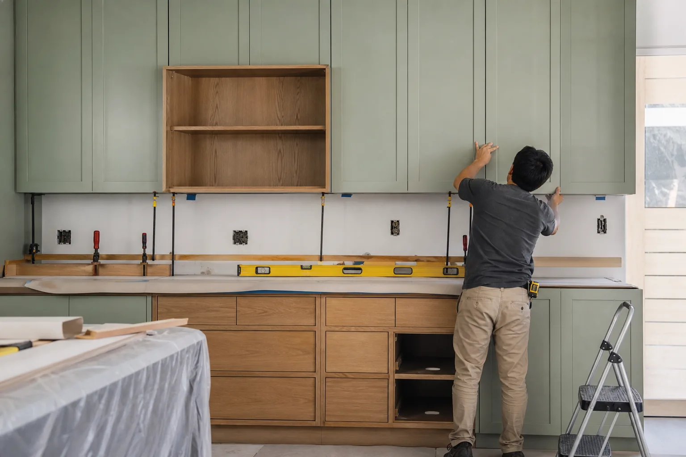
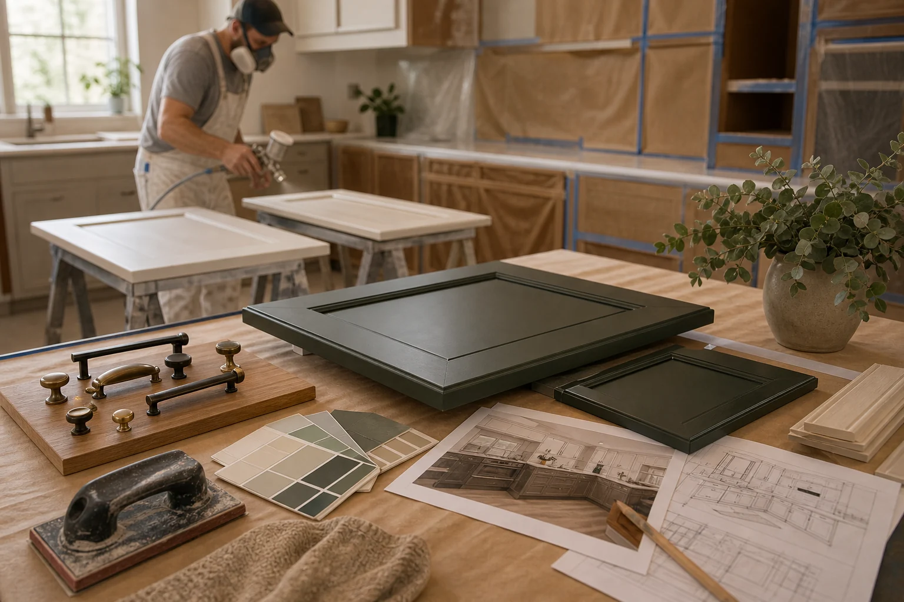

Refresh Existing Cabinets Without Replacing Everything
When cabinet boxes are sound, refinishing or painting may update the kitchen's look with less disruption than a full replacement. We help route requests to independent local providers.
Refinishing Scope
Finish quality depends heavily on prep, surface condition, products used, and drying conditions.
- Cabinet condition review, cleaning, degreasing, sanding, filling, priming, and surface repair.
- Painting, staining, clear coating, door and drawer front refinishing, or refacing discussion.
- Hardware replacement, hinge adjustment, soft-close options, pulls, knobs, and alignment.
- Masking, ventilation, drying time, odor expectations, touch-ups, warranty, and care guidance.
Prep Quality
Ask how the provider cleans, sands, primes, and handles peeling, glossy finishes, damaged veneer, or old paint.
Finish Method
Clarify whether doors are sprayed off-site, finished on-site, brushed, rolled, stained, or coated with a specialty product.
Dry Time
Discuss how long the kitchen will be limited, when doors return, and how soon surfaces can be cleaned or touched.
Tell Us About Your Cabinets
Share cabinet material, current finish, desired color, hardware goals, and any peeling or damage so the request can be routed clearly.
- Add photos of the current kitchen.
- Include rough measurements or room size.
- Share timing, budget range, and priorities.

Refinishing Depends on Prep, Product, and Dry Time
Cabinet refinishing can transform a kitchen, but only if the existing surfaces are suitable and the prep process is realistic. The request should describe condition, finish goals, and kitchen access needs.
Prepare Before Contact
- Photos of doors, drawer fronts, and worn areas
- Current material if known
- Desired color, sheen, and hardware changes
- Peeling, grease, water damage, or veneer issues
Ask the Provider
- How surfaces are cleaned and sanded
- Whether doors are sprayed off-site
- How long drying and curing will take
- What touch-up or warranty terms apply

Best for homeowners who like their layout but want a cleaner color, repaired finish, updated hardware, or a less disruptive refresh.
Cabinet Refinishing Lives or Dies on Prep, Product, and Dry Time
Refinishing can be a smart alternative when cabinet boxes are sound, but results depend on surface condition, cleaning, sanding, primer, coating method, ventilation, curing time, and how doors and drawers are handled.
Surface condition
Peeling finish, grease, veneer damage, water stains, dents, old paint, and glossy coatings.
Prep process
Cleaning, sanding, filling, priming, masking, dust control, and door or drawer removal.
Finish method
Sprayed, brushed, rolled, stained, clear-coated, or off-site finishing for doors and fronts.
Use after work
Drying time, cure time, odor, touch-ups, cleaning limits, hardware installation, and warranty.
Before You Speak With a Provider
- Send close photos of worn doors, corners, cabinet sides, and peeling areas.
- Ask whether doors are sprayed off-site or finished in the home.
- Confirm how long cabinets need to cure before normal cleaning and use.